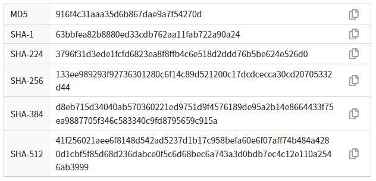

Una función criptográfica hash es un algoritmo matemático que transforma cualquier dato entrante en una serie de caracteres formando una sucesión alfanumérica (letras y números) hexadecimal, con una longitud normalmente fija que constituye una especie de resumen del mensaje.
Tipos de algoritmos de hash más utilizados
MD5
MD5 es una función hash popular y ampliamente usada, diseñada a principios de la década de 1990 como una función hash criptográfica. Trabaja con bloques de 512 bits y genera resúmenes de hash de 128 bits (128/4 = 32 caracteres hexadecimales). MD5 fue publicada en 1992, y aunque durante estos años fue usada y adoptada en forma generalizada, se han descubierto varias vulnerabilidades durante los últimos años por lo que actualmente se recomienda usar algoritmos más seguros.
Md5sum es un programa de hash que calcula y verifica los hashes MD5 de 128 bits. Se utiliza principalmente para verificar la integridad de los archivos. Para ello se envía junto con el archivo el Md5sum obtenido antes del envío y el receptor aplica de nuevo el algoritmo del archivo enviado para comprobar que su Md5sum no ha cambiado por pérdida o modificación de su contenido.
SHA-1
Secure Hash Algorithm (SHA) . Los algoritmos de hash seguro son una familia de funciones de hash criptográficas publicadas por el Instituto Nacional de Estándares y Tecnología (NIST) como un estándar federal de procesamiento de información (FIPS) de EE. UU; que incluyen: SHA-1, SHA-2 y SHA-3
SHA-1 trabaja con bloques de 512 bits y genera un resumen hash de 160 bits. Se utiliza en protocolos como TLS/SSL, PGP SSH y en IPsec.
Fue diseñado por la Agencia de Seguridad Nacional (NSA) para ser parte de Digital Signature Algorithm. Se descubrieron debilidades criptográficas en SHA-1, y el estándar ya no fue aprobado para la mayoría de los usos criptográficos después de 2010.
SHA-2
Se compone de una familia de dos funciones hash similares, con diferentes tamaños de bloque, conocidas como SHA-256 y SHA-512 . Se diferencian por el tamaño de las palabras; SHA-256 usa palabras de 32 bytes (256/8) donde SHA-512 usa palabras de 64 bytes (512/8). De SHA-2, también hay versiones truncadas de cada estándar, conocidas como SHA-224 , SHA-384 , SHA-512/224 y SHA-512/256 . Estos también fueron diseñados por la NSA.
- Las funciones hash SHA-2 están implementadas en una gran variedad de aplicaciones y protocolos de seguridad, como por ejemplo: TLS y SSL, PGP, SSH, S/MIME, PPCoin y IPsec.
- La moneda criptográfica Bitcoin depende en gran medida en un doble uso del SHA-256.
- A finales de 2013, los mejores ataques públicos consiguieron romper las 46 de las 64 iteraciones del SHA-256 y 46 de las 80 iteraciones del SHA-512
SHA-3
Es una función hash anteriormente llamada Keccak , elegida en 2012 después de una competencia pública entre diseñadores que no pertenecen a la NSA. Admite las mismas longitudes de hash que SHA-2 y su estructura interna difiere significativamente del resto de la familia SHA.
SHA-3 es muy diferente al actual SHA-2, sin embargo el NIST afirma que este nuevo algoritmo no pretende sustituir de momento al actual SHA-2, quien no ha demostrado por el momento ninguna vulnerabilidad, sino que simplemente pretende ser un salvoconducto por si ocurre algo con el estándar actual. Los investigadores de seguridad afirman que se tardan años en crear un nuevo estándar, y por ello han querido estar preparados para el futuro desarrollando y estandarizando este nuevo algoritmo que, sin duda, protegerá de la mejor forma posible la información de los usuarios.
Aspecto de diferentes algoritmos de hash
